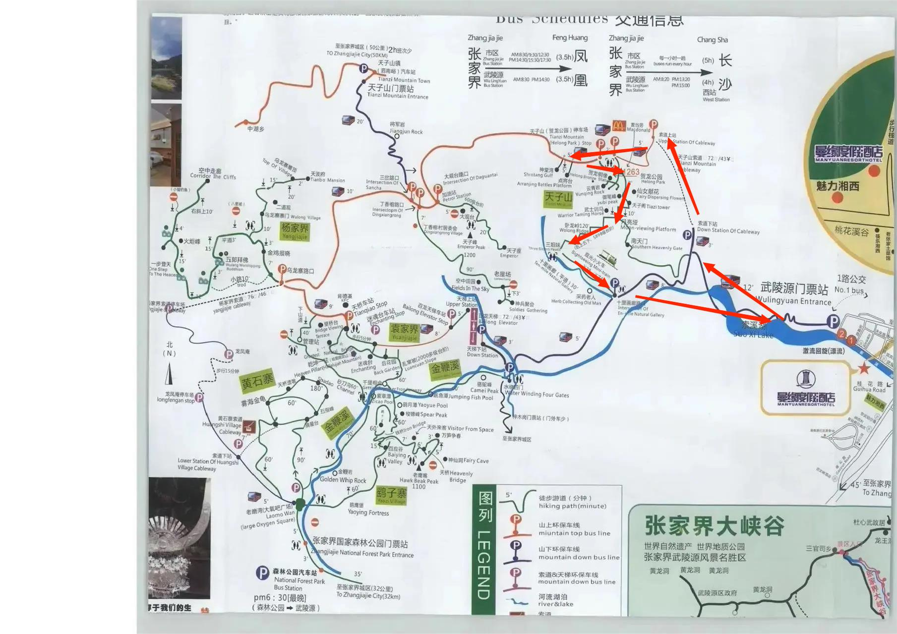

启程
出发：淮安东->长沙南->张家界西
经停信息：淮安东->长沙南
- 换乘：乘坐轨道交通2号线，经过7站，到达长沙站
经停信息：长沙->张家界西

住宿：
到达高铁站出站去马路边等去武陵源方向的中巴车（有问题可以询问火车站工作人员）。 然后到武陵源景区步行前往张家界追忆民宿住宿
第一天
 从标志门（东门）进入前往张家界国家森林公园→天子山索道→点将台、神堂湾→贺龙公园往下走→卧龙岭→十里画廊（有观光小火车）→追忆民宿
第二天
从标志门（东门）进入前往张家界国家森林公园→天子山索道→大观台→老屋场→杨家界（天然长城）→袁家界（哈利路亚山、迷魂台、后花园）→百龙天梯→追忆民宿
第三天
从标志门（东门）进入前往张家界国家森林公园→金鞭溪→森林大氧吧→黄石寨（雾海金龟、天桥遗墩、五指峰、摘星台）→公园门口→追忆民宿
第四天
黄龙洞->张家界大峡谷：玻璃桥→晚上住加州时光咖啡旅馆（时间计算好）
第五天:天门山国家森林公园
上午：
先找到索道下站，然后买A线（A线全程的索道，B线是到半山腰）：可以看到99道湾公路奇观。然后到达索道上站，先上玻璃栈道然后再到鬼谷栈道。再然后沿着西线到达天门山寺。再然后到东线，去天门山大桥。做世界上最长的扶梯到天门洞，有999节天梯，可以坐扶梯下去到天门山广场，到索道中站下山。
下午：
坐高铁（张家界西->凤凰古城），然后打车或者坐凤凰旅行专线前往凤凰古城。晚上住宿凤凰古城，看凤凰古城夜景。
第六天
游玩凤凰古城，返回市区住原宿客栈（坐公交或者打车）